Медицинский педикюр. Основы подологии. Семинар для мастеров, которые хотят работать осознанно — и браться за случаи, от которых другие отказываются.
Анна Геннадьевна — практикующий подолог с 1995 года. За 30 лет работы — более 10 000 случаев. С 2005 года обучает специалистов по всему миру. Основатель iPODO centre.
16 академических часов. 50% времени — практика на живых моделях. Вводный курс: фундамент и система мышления подолога.
Реальные случаи из практики — именно такие разбираем на семинаре.
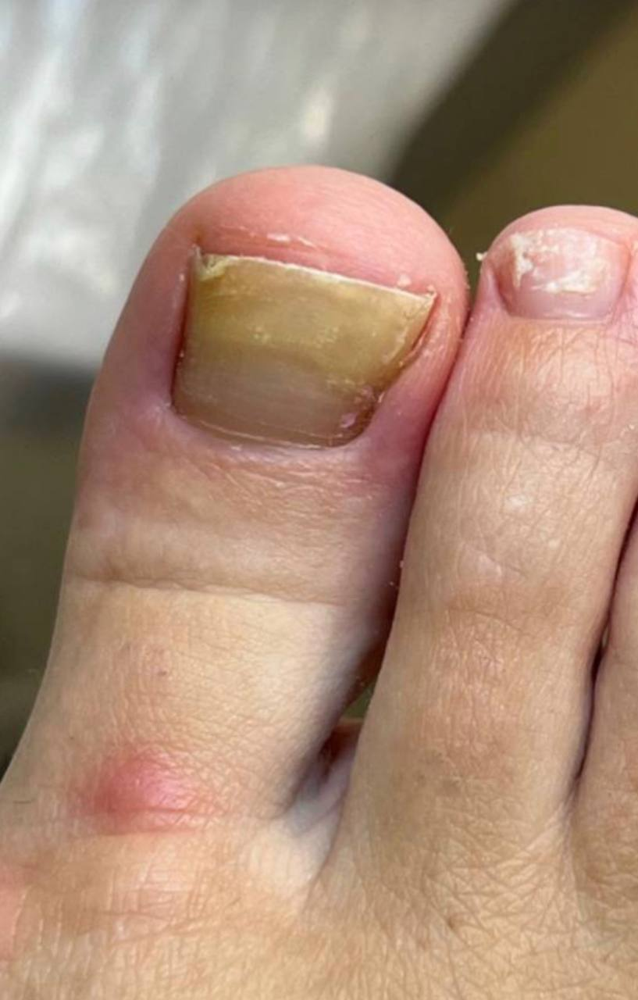
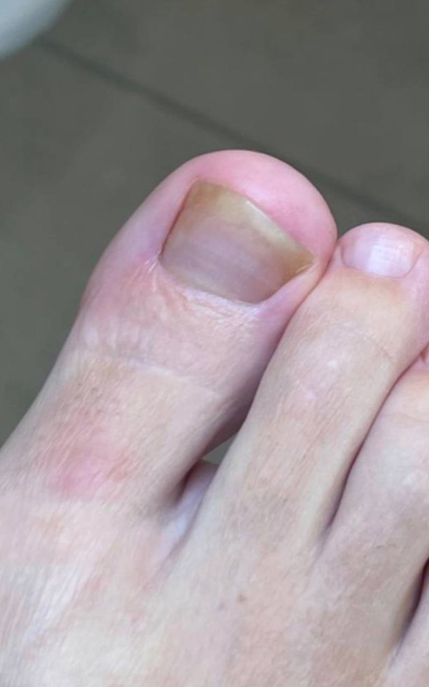
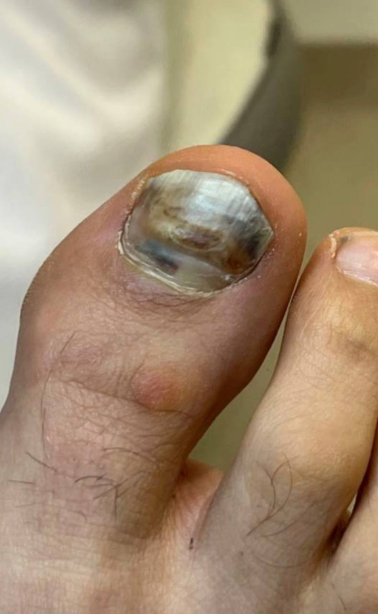
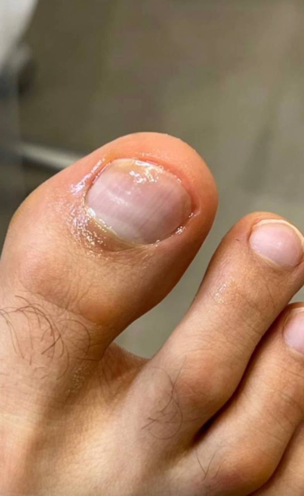
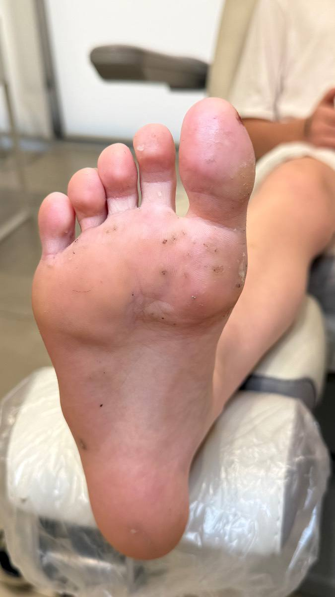
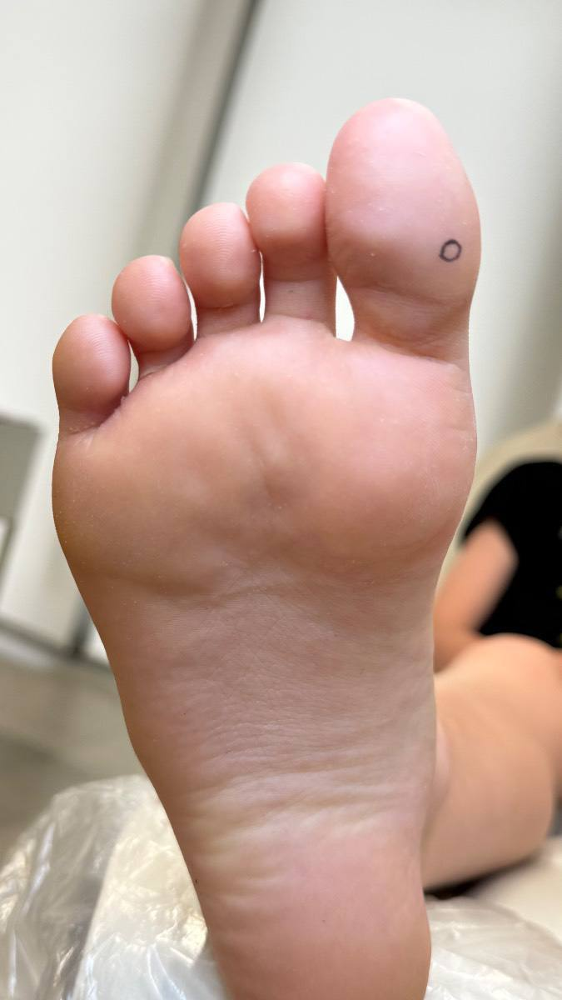
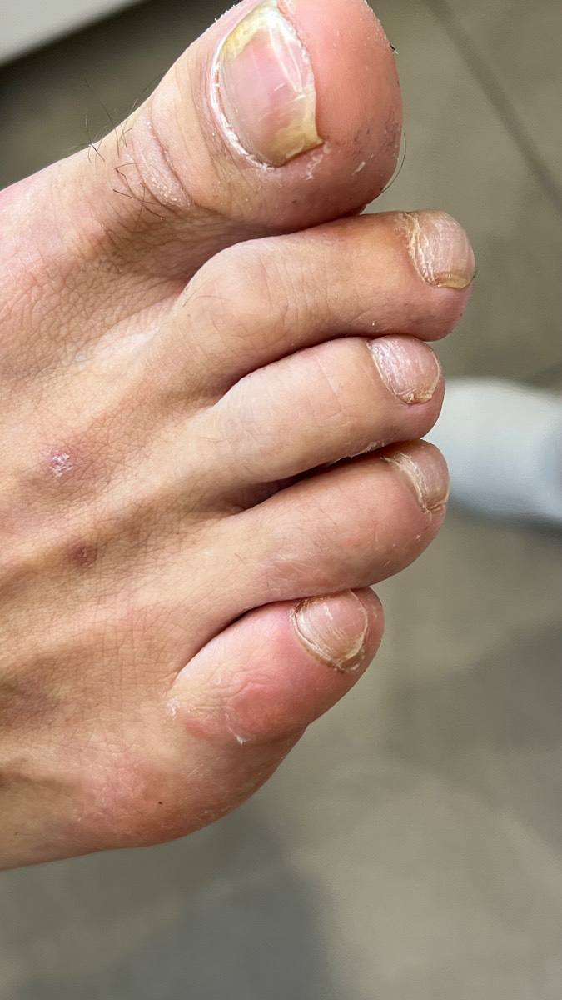
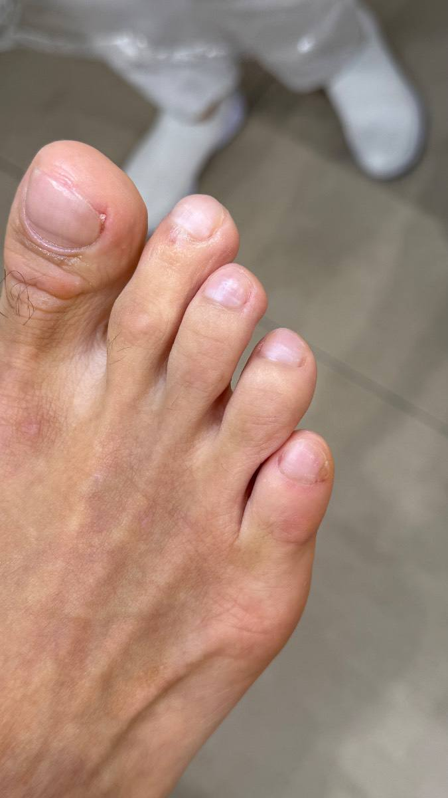
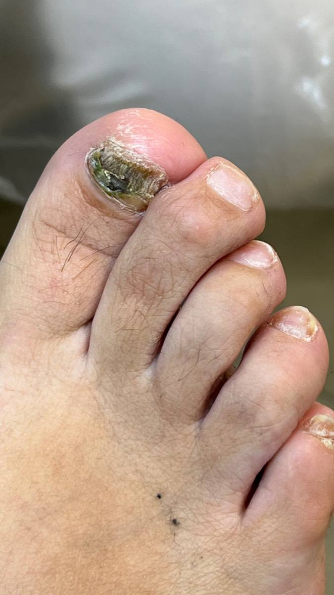
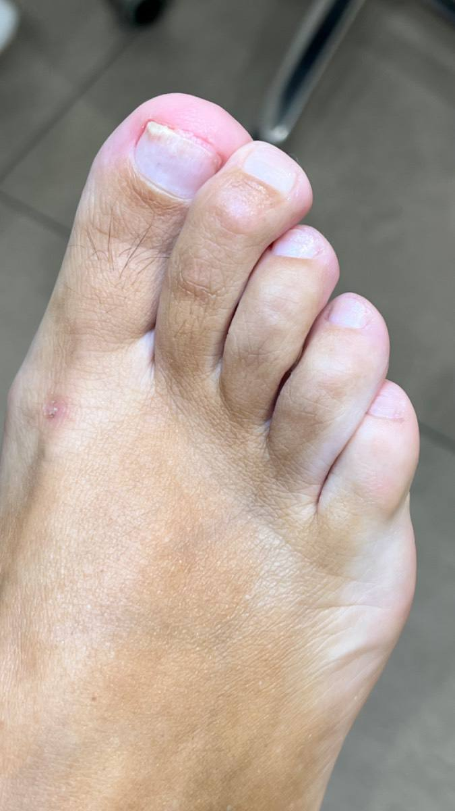
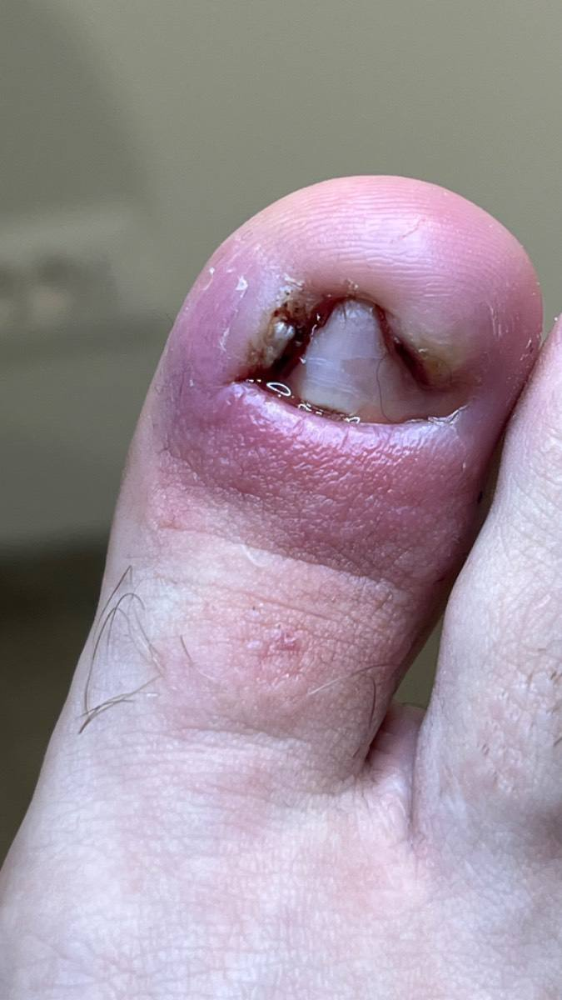
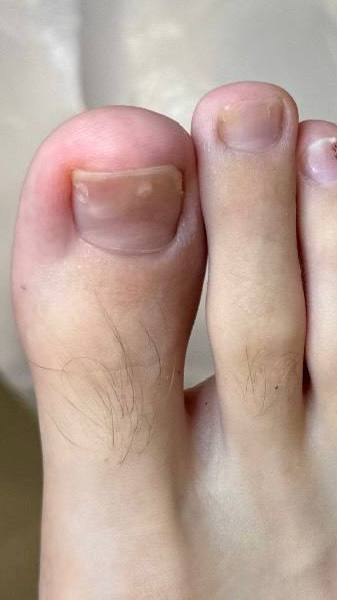
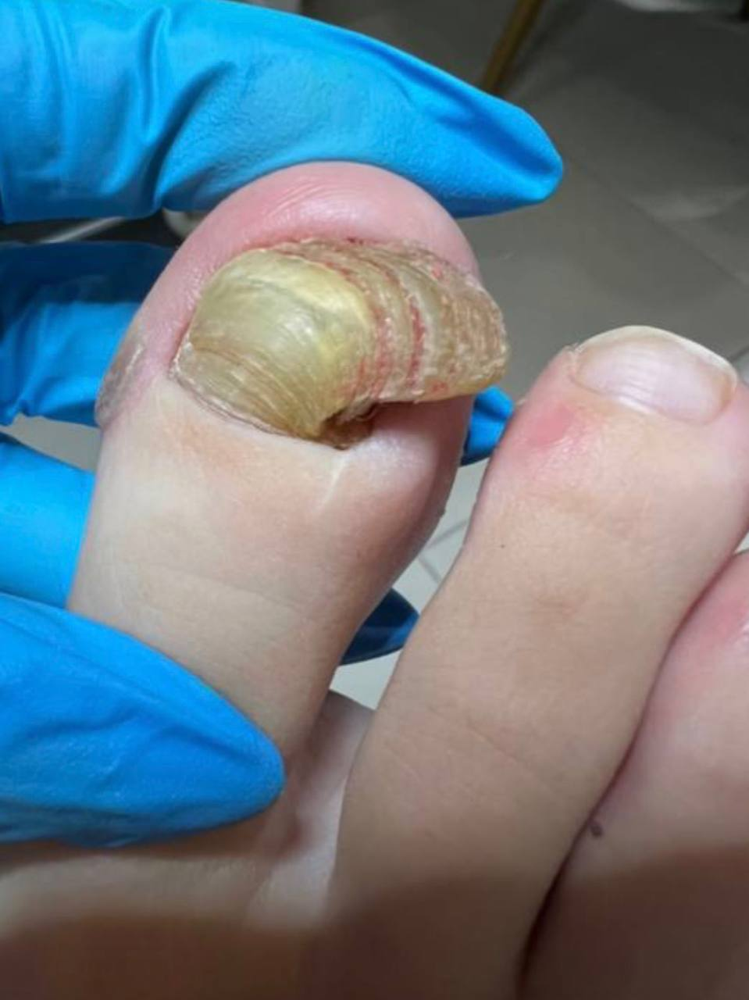
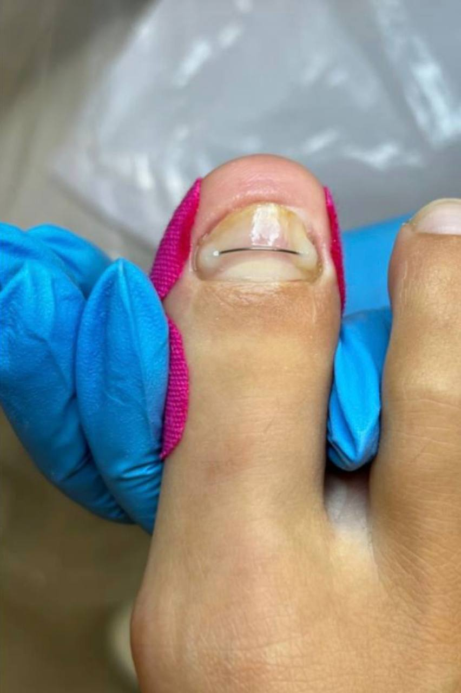
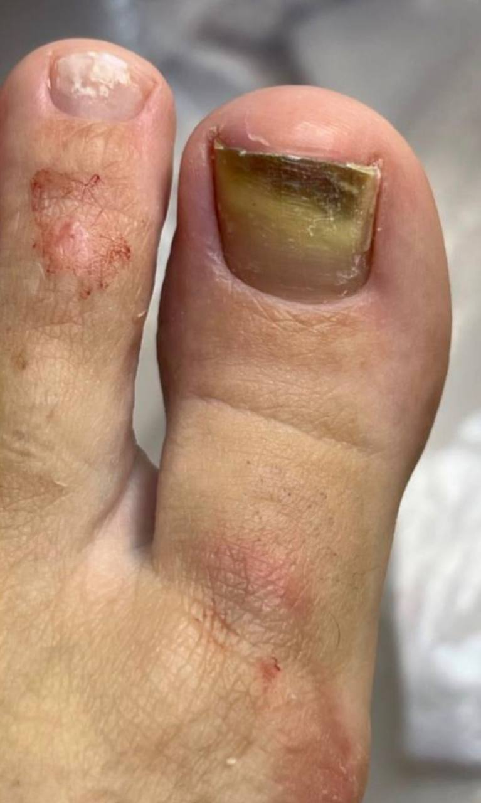
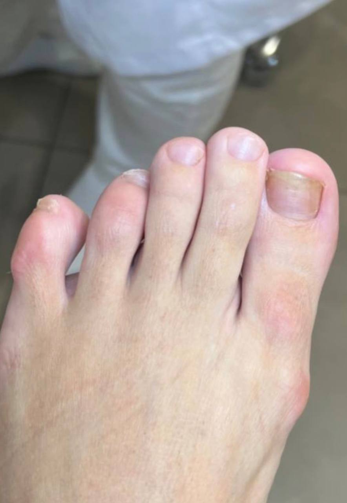
Если не нашли ответ — напишите нам, мы ответим в течение дня.
2 дня — и вы перестанете гадать. Будете понимать, что видите, и знать, что с этим делать.
После отправки — письмо с деталями придёт на ваш
email.
Менеджер свяжется в
течение 15 минут.